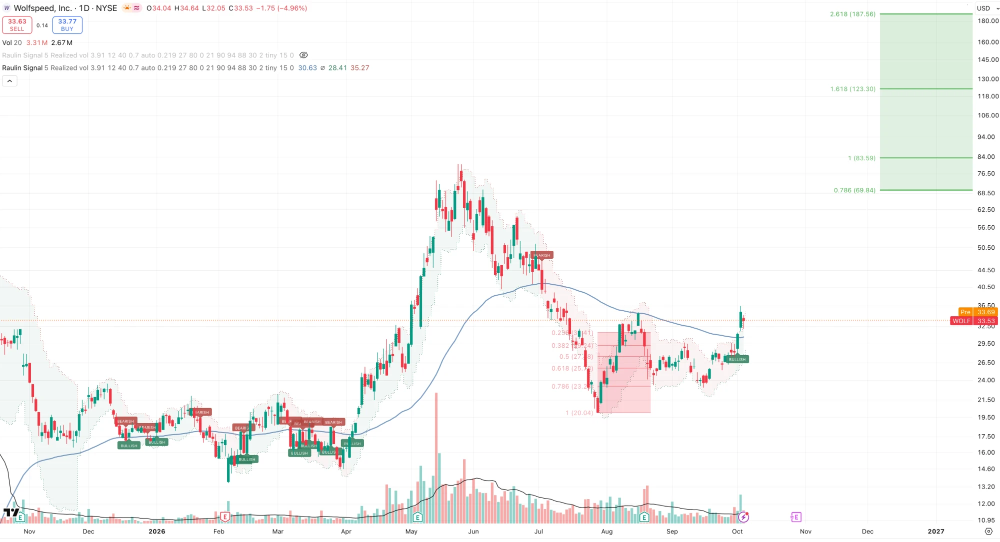
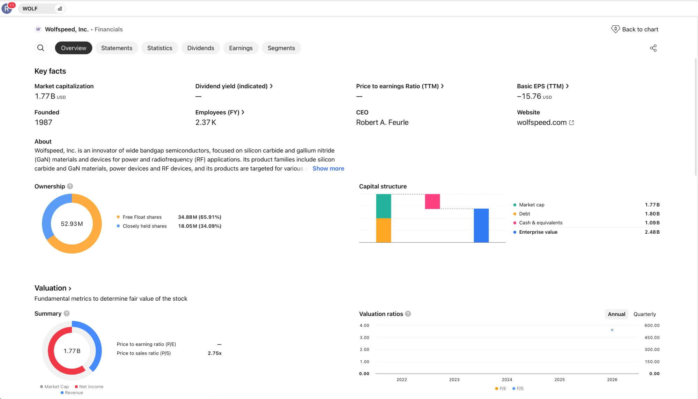

Ausführung
Die Fabriken zu füllen und die Ausbeute hochzubekommen ist schwer — daran hat sich Wolfspeed schon einmal verhoben.

Spekulativ — das steht hier oben und nicht versteckt am Ende. Warum ich die Aktie trotzdem spannend finde, was dagegen spricht, und wie ich damit umgehe.
Große Fonds müssen Milliarden unterbringen und arbeiten nach festen Regeln. Was durch eine Insolvenz gegangen ist, dürfen viele davon schlicht nicht halten — und eine Firma dieser Größe ist für sie ohnehin zu klein: Sie kämen gar nicht hinein, ohne gleich einen zu großen Teil zu besitzen. Beides drückt den Kurs, ohne dass jemand das Geschäft bewertet hätte. Genau da bist du als Kleinanleger im Vorteil.
📚 Buchtipp: Joel Greenblatt, You Can Be a Stock Market Genius — mehr Empfehlungen in meiner Bio.
Wolfspeed stellt Siliziumkarbid her — das Material, auf dem Leistungselektronik mit hoher Spannung läuft. Es hält etwa das Zehnfache der Feldstärke von normalem Silizium aus und leitet Wärme rund dreimal besser. Deshalb steckt es in E-Auto-Antrieben, Netztechnik, Verteidigung und zunehmend in KI-Rechenzentren.
2024 war Wolfspeed weltweit die Nummer eins bei Siliziumkarbid-Substraten mit rund einem Drittel Marktanteil — durchgängig integriert vom Kristall bis zum Chip, gefertigt in den USA.
Im Juni 2025 ging Wolfspeed in ein vorbereitetes Chapter-11-Verfahren, im September 2025 kam die Aktie zurück an die Börse. Das Verfahren hat die Schulden um rund 70 % gesenkt, Fälligkeiten bis 2030 gestreckt und die jährlichen Zinszahlungen um etwa 60 % reduziert.
Damit hat das neue Eigenkapital wieder einen weitgehend unbelasteten Anspruch auf die Anlagen. Trotzdem fassen viele Investoren nichts an, was durch eine Insolvenz gegangen ist — und genau in diesem Stigma sehe ich die Gelegenheit.
Selbst mit allen Schulden zahlt man weniger als die Hälfte der Baukosten. Eine Siliziumkarbid-Fabrik zu bauen und die Ausbeute in den Griff zu bekommen dauert Jahre und kostet Milliarden. Deshalb ist der Wiederbeschaffungswert für mich ein echter Boden.

KI-Racks werden so stromhungrig, dass Rechenzentren auf höhere Spannungen umstellen — Nvidias 800-Volt-Architektur ist das bekannteste Beispiel. Strom bei solchen Spannungen effizient umzuwandeln ist genau das, wofür 1.200-Volt-Siliziumkarbid gebaut ist.
Zu E-Autos und Stromnetz kommt damit ein zweites Standbein — und Wolfspeed ist als größter US-Produzent der naheliegende Name dafür.
Im Juli 2026 berichtete SemiAnalysis, Nvidias Kyber-Rack für Rubin Ultra rutsche auf 2028. Nvidia widerspricht und sagt, die Roadmap sei intakt. Für mich verschiebt das, wann die Nachfrage kommt, nicht ob.
Seit der Rückkehr an die Börse sind Navitas, Vicor und Monolithic Power deutlich stärker gelaufen. Im Geschäft sehe ich keinen Grund dafür — ich sehe das Stigma der Restrukturierung. Solche Lücken schließen sich, sobald die Geschichte sauber wird.
Die gesamte Produktion steht in den USA. Siliziumkarbid führt das US-Energieministerium unter den kritischen Materialien, und Wolfspeed war für bis zu 750 Mio. $ aus dem CHIPS-Programm vorgesehen. Washington hat sich bei Intel und MP Materials bereits an strategischen Firmen beteiligt.
Eine Beteiligung an Wolfspeed gibt es nicht — das ist eine Frage, keine Nachricht. Käme sie, könnte der Abschlag schnell verschwinden.

Die Fabriken zu füllen und die Ausbeute hochzubekommen ist schwer — daran hat sich Wolfspeed schon einmal verhoben.
Ein anlagenschweres Geschäft kann frisches Eigenkapital brauchen. Jede neue Aktie drückt den Kurs der bestehenden.
Chinesische Anbieter drücken die Substratpreise. Ein Preiskampf trifft genau die Marge, auf der die These steht.
Kommen die 800 Volt später, kommt das KI-Standbein später — und bis dahin muss die Firma durchhalten.
Mein Kursziel sind 123 $, auf lange Sicht halte ich eine Verzehnfachung für möglich. Dasselbe Wort beschreibt das Risiko: spekulativ.
Ich heirate diese Aktie nicht. Ich bin hier aktiv unterwegs und gehe rund um große Termine auch mal raus. Bei dieser Schwankung ist Stillhalten keine Strategie.
Was vorher feststeht, nicht danach: eine Positionsgröße, die ich aushalte, und eine Marke, bei der ich kleiner werde — derzeit die Trendlinie aus dem Chart.